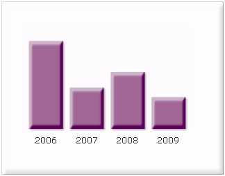
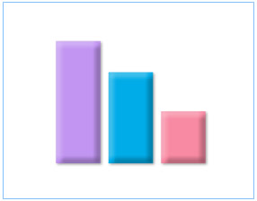

If you need to create bevel effects for any of chart objects,
you will need to use the Bevel Style Type.

See it live!
Note: In JavaScript charts, customized bevel style type is not available.
It includes the following list of properties: |
| angle |
The
angle of the bevel. Valid values are from 0 to 360 degrees. The
default value is 45. |
| distance |
The
offset distance of the bevel. Valid values are in pixels (floating
point). The default value is 4. |
| shadowColor |
The
shadow color of the bevel. Valid values are in hexadecimal format
RRGGBB (without #). The default value is 000000. |
| shadowAlpha |
The
alpha transparency value of the shadow color. This value is specified
as a normalized value from 0 to 100. For example, 25 set a transparency
value of 25%. The default value is 50. |
| highlightColor |
The
highlight color of the bevel. Valid values are in hexadecimal format
RRGGBB (without #). The default value is FFFFFF. |
| highlightAlpha |
The
alpha transparency value of the highlight color. The value is specified
as a normalized value from 0 to 100. For example, 25 sets a transparency
value of 25%. The default value is 50. |
| blurX |
The
amount of horizontal blur in pixels. Valid values are from 0 to
255 (floating point). The default value is 4. Values that are a
power of 2 (such as 2, 4, 8, 16, and 32) are optimized to render
more quickly than other values. |
| blurY |
The
amount of vertical blur in pixels. Valid values are from 0 to 255
(floating point). The default value is 4. Values that are a power
of 2 (such as 2, 4, 8, 16, and 32) are optimized to render more
quickly than other values. |
| Strength |
The
strength of the imprint or spread. Valid values are from 0 to 255.
The larger the value, the more color is imprinted and the stronger
the contrast between the bevel and the background. The default value
is 1. |
| quality |
The
number of times to apply the filter. The default value is 1, which
is equivalent to low quality. A value of 2 is medium quality, and
a value of 3 is high quality. Filters with lower values are rendered
more quickly. |
|
To set the bevel for any object of the chart, you
just need to define a Bevel Style Type
and apply it as under: |
<definition>
<style name='MyFirstBevel' type='Bevel' />
</definition>
<application>
<apply toObject='DataPlot' styles='MyFirstBevel' />
</application>
"definition":[{"name":"MyFirstBevel", "type":"Bevel"}],
"application":[{"toobject":"DataPlot","styles":"MyFirstBevel"}]
|
It will give you the following effect: |
|
|
You can set the bevel angle and distance as under:
<style name='MyFirstBevel' type='Bevel' angle='200' distance='7' />
"definition":[{ "name":"MyFirstBevel", "type":"Bevel", "angle":"200", "distance":"7" }]
|
|
| distance |
distance='value
(in pixels)' |
distance='7'
|
| angle |
angle='value
(between 0 to 360)' |
angle='200' |
|
And it looks like this now: |
|
|
To change shadow color and alpha, you can use the following
parameters:
<style name='MyFirstBevel' type='Bevel' shadowColor='890EC1' shadowAlpha='80' distance='5' angle='45'/>
"definition":[{"name":"MyFirstBevel", "type":"Bevel", "shadowcolor":"890EC1", "shadowalpha":"80", "distance":"5", "angle":"45" }]
|
|
|
| shadowColor |
shadowColor='Hex
Value (without #)' |
shadowColor='890EC1'
|
| shadowAlpha |
shadowAlpha='value
(between 0 to 100)' |
shadowAlpha='80' |
|
It will change the shadow color as under: |
|
|
You can also change the blur amount to get a smoother
bevel.
<style name='MyFirstBevel' type='Bevel' blurX='12' blurY='12'/>
"definition":[{ "name":"MyFirstBevel", "type":"Bevel", "blurx":"12", "blury":"12" }]
|
|
| blurX |
blurX='value' |
blurX='12' |
| blurY |
blurY='value' |
blurY='12' |
|
The above gives the following output: |
|
 |
Original with default
blur |
With both blurX and
blurY set as 12 |
|
|
To increase bevel strength, use the strength attribute as under:
<style name='MyFirstBevel' type='Bevel' strength='3'/>
"definition":[{ "name":"MyFirstBevel", "type":"Bevel", "strength":"3" }]
|
|
|
| Strength |
strength='value' |
strength='3' |
|
|
You can play with a plethora of aforementioned properties
and style type to get the look you want. |